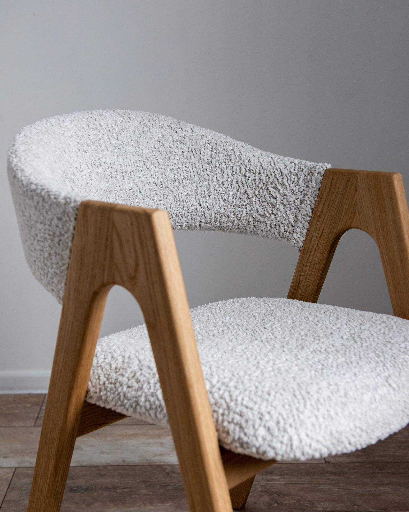
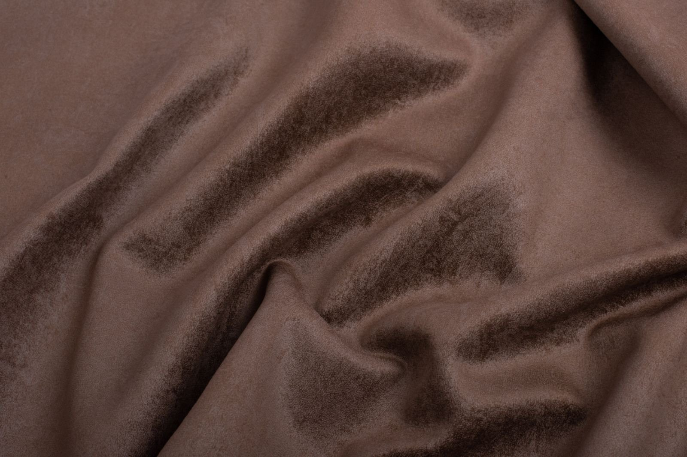
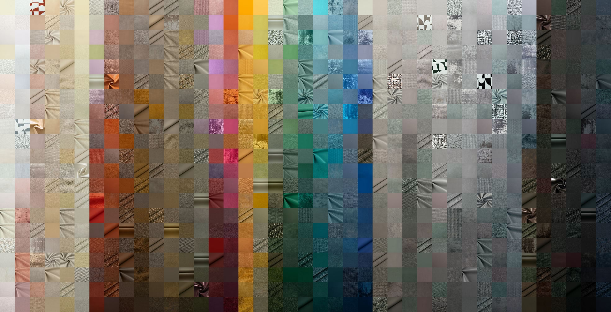
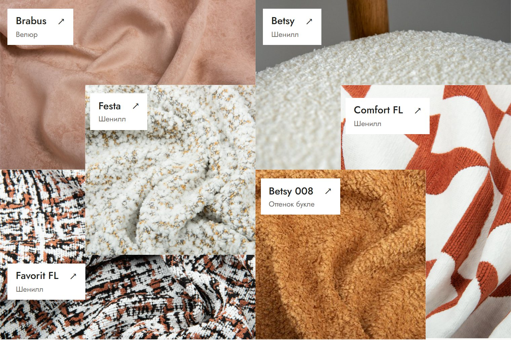
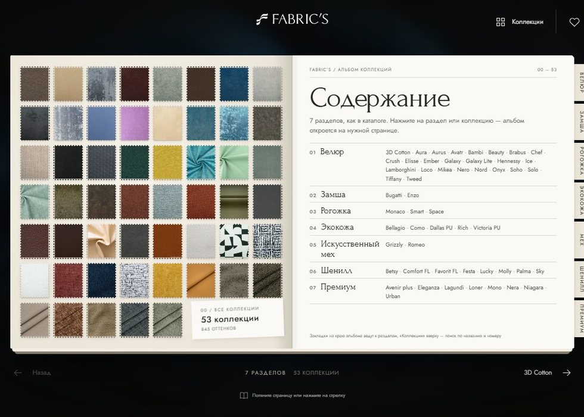

Пять вариантов
визуализации
Ткани и возможности во всех вариантах одинаковые. Отличается подача.
Как смотреть. Посмотрите все пять, лучше с компьютера. На каждый хватит пары минут. Потом напишите мне, какой ближе. Если в другом варианте что-то понравится, перенесу это в выбранный.

Спокойная галерея
Светлая страница в духе furman.by. Сверху крупное фото ткани, ниже разделы каталога и подбор под задачу.
Открыть макет ↗︎
Ткань во весь экран
Первый экран целиком занимает велюр Brabus. Ниже диваны и кресла в тканях коллекций.
Открыть макет ↗︎
От цвета к ткани
Все оттенки каталога разложены по цвету на одной стене. Нажали на квадрат, и открылась коллекция.
Открыть макет ↗︎
Текстильная мозаика
На первом экране ткани сложены в коллаж из фигур. Нажмите на фигуру, и откроется коллекция с оттенками.
Открыть макет ↗︎
Альбом тканей
Каталог в виде книги с образцами. Листаете по разделам, а отмеченные образцы собираются на последней странице.
Открыть макет ↗︎